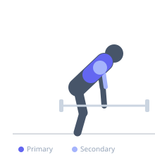

Exercise guide / Seal Row
Seal Row
The seal row is a prone barbell row performed with the chest resting on an elevated flat bench, so the arms hang completely freely and the bar travels from full extension to contact with the underside of the bench on every repetition. This setup eliminates all lower back involvement and momentum, forcing the upper back to do all the work through the full range of motion.
Primary muscles
rhomboid major
trapezius middle
latissimus dorsi
Secondary muscles
trapezius lower
deltoid posterior
biceps brachii long head
Stabilizers
infraspinatus
Equipment
Standard Barbell
Flat Bench


Starting position
- Elevate a flat bench on safeties, boxes, or plates so there is enough clearance beneath it for the barbell and loaded plates. Lie prone on the bench with the chest supported. Load the barbell underneath and grasp it with an overhand grip slightly wider than shoulder-width. Arms should be fully extended.
Setup
- Place a flat bench on two sturdy boxes or power rack safeties so the underside of the bench is high enough to allow the loaded barbell to pass underneath freely. Load the barbell before mounting the bench.
Steps
- Step 1: Begin with arms hanging, the barbell at full extension below the bench.
- Step 2: Row the barbell up toward the underside of the bench by driving the elbows up and back.
- Step 3: Touch or nearly touch the bar to the underside of the bench — this is the range-of-motion marker.
- Step 4: Squeeze the shoulder blades together at the top.
- Step 5: Lower the barbell fully, allowing the shoulder blades to protract, before the next rep.
Coaching cues
- Let the bar hang completely at the bottom — no short reps
- Touch the bench every single rep
- Imagine pulling the bench down onto the bar, not the bar up to the bench
Breathing
- Exhale as you row the bar up. Inhale as you lower it.
Range of motion
- Full dead hang at the bottom to bar contact with the bench at the top. This is the longest available ROM for a horizontal pull.
Tempo
- 1-1-3-0 (1s concentric, 1s hold, 3s eccentric)
Common mistakes
- Not elevating the bench high enough, restricting the range of motion
- Failing to lower to full arm extension on each rep
- Letting the bar swing forward rather than keeping it in a vertical path
Safety
- Ensure the bench supports are extremely stable before lying on the bench
- Have a partner load the bar or load it before mounting the bench
Training
- strength: 5–8 reps
- hypertrophy: 8–12 reps
- strength: 4–5 sets
- hypertrophy: 3–4 sets
- Rest: {'strength': 150, 'hypertrophy': 90}